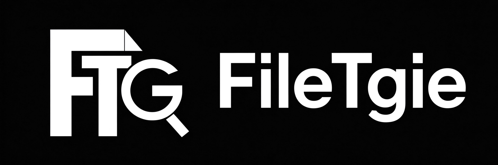

Written in pure C with the standard library only, one source tree builds for Windows and Linux. Every command does one small, predictable thing and never touches your files.
Each command performs a single, clearly bounded operation. Results are clear and expected; there are no surprise side effects.
A single compact executable with no runtime, no package manager and no configuration file.
Built from C standard library calls and platform-native APIs; no third-party dependency anywhere in the source tree.
Inspection never modifies, deletes or moves user files. Normal writes are limited to its own filetgie.log; explicit update and the bundled updater only upgrade FileTgie itself, and optional reminder creates or removes one FileTgie-owned task.
Interface messages switch between cn, en, ja and ru with --lang; unknown codes warn and fall back to cn.
src/port.c isolates the Windows wide-character Win32 API from POSIX; the rest of the code is platform-independent.
Free to run, study, modify and redistribute; static and dynamic linking obligations are documented in LICENSE and COPYING.
Every entry below comes from the built-in command table. log and dellog read or delete FileTgie's own log; all others are strictly read-only.
FileTgie count D:\Photos
FileTgie --lang en linesdir ./src
FileTgie findlarge D:\app\logs 50
FileTgie findcontent ./src "TODO"
FileTgie compare a.bin b.bin
FileTgie disk
size, stat and du also print exact byte counts.--lang also accepts -lang, -l, and the equals form --lang=en / -l=ja; the code is case-insensitive and may appear before or after the command.--exclude <glob> and --exclude-ext <ext> may be repeated; they apply only to traversal commands, not to commands that take an explicit single file such as lines or hash.help to print the full command table (exit code 0).checkupdate is read-only; update manually checks GitHub and the website before a silent Windows overwrite. reminder on defaults to a 1-minute read-only check, reminder on every 5 sets a 5-minute interval, reminder status reports the task, and reminder off deletes it. One notification appears for each newly discovered version.FileTgie does not download, call, bundle or require any companion below. Install them separately; let each tool do the job it does best, and use FileTgie for exact counts, line totals, size, hashes and directory comparison.
fd finds candidate files by name quickly; pass a candidate path to FileTgie for exact size, line count or hash. The "file-finding twin" works without being embedded in FTG.
fd projectrg searches file contents at high speed; FileTgie gives exact text-line totals, byte size and integrity checks instead of replacing your search engine.
ripgrep projectUse fzf as an interactive fuzzy picker over a file list; once you choose, hand the selected path to FileTgie for a stable read-only report.
fzf projectbat previews a file with line numbers and syntax highlighting; FileTgie reports the exact total line count, exact bytes and checksum.
bat projecteza gives a modern directory listing or tree view; FileTgie counts files/folders, sums directory size and compares two directories with exact grouped numbers.
eza projectdust and duf visualize disk use; FileTgie reports exact free space, drive capacity, oversized files and byte totals from the command line.
dust projectAll prompts, errors and help strings ship in four language packs inside the binary; no external locale files are needed.
FileTgie --lang en count D:\docs, FileTgie -lang ja lines ./a.txt, FileTgie -l ru disk.cn, and the program keeps running.langs lists the available language codes at runtime.The portable package contains FileTgie.exe, FileTgieUpdater.exe, README, User Manual, LICENSE and COPYING. It writes no registry keys and nothing outside the folder; unzip and run, delete the folder to uninstall. The only file written next to the executable is its own filetgie.log.
The installer registers App Paths and PATH under Program Files. It detects an installed copy, App Paths registration, or leftover files after a non-official deletion, and keeps the overwrite option checked by default. On overwrite, previous program files move to a disabled .old backup folder; the registry, PATH and shortcuts keep pointing only to the new root-folder files. The bundled updater checks GitHub and the website before launching a silent overwrite install.
v0.4.0 supplies Linux-compatible source code; run make on a Linux host and start with ./FileTgie --lang en help. Inspection commands need no installer, administrator rights or network; checkupdate uses curl for GitHub. The last verified x86_64 glibc prebuilt tarball remains in the v0.3.0 Release; musl/Alpine is not guaranteed.
makeBuild Linux from source
All sources live under src/ and use only the C standard library and native platform APIs. Run build.bat on Windows or make on Linux; the Windows updater builds only on Windows.
build.bat